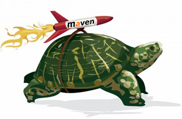

Keeping the build fast is extremely important when you are doing agile software development and deliver continuously. You want rapid feedback and verification that everything works each time you make a change. A slow build is both a waste of time and frustrating. The latter disadvantage is probably the worst. Developing software is not about producing code, it’s about thinking, so waiting for a build to finish might actually give you time to think. It’s when the time spent building rises above what you feel is acceptable, that it hurts. So, what is an acceptable build time? It depends. In my experience, if the complete build you use most often takes more than 3 minutes, it hurts. This does not mean that you should avoid slow tests or other tasks that will raise the complete build time above 3 minutes. It means that you should have techniques for building only what’s necessary for the task you are performing, in addition to optimizing the complete build. In this post I will show some of the techniques I use for optimizing Maven builds.
Skipping unit tests
This is highly not recommended. You should run your tests every time you make a change to source code. This means they have to run fast. Make sure that all your unit tests are in fact unit tests and not integration tests, i. e. they test only the smallest testable part of an application isolated from the remainder of the code. It is not a unit test if you are testing a method calling other public methods or if the code under test interacts with the db, file system or is dependent on containers or contexts (Spring, Hibernate, sessions and the like).
There’s no rule without exception, so sometimes it may be acceptable to skip running unit tests. Examples are if you are working with GUI layout or are running code to generate test data. If you set the property -DskipTests in the maven surefire plugin, which runs unit tests, it skips test execution.
mvn clean install -DskipTests
Remember to always run the tests before checking in!
Skipping irrelevant tasks
Maven comes with a lot of plugins, and a lot more is available for inclusion. These provide valuable add-ons to your build lifecycle enabling the developer to perform tasks on and verification of the code produced. Many of these steps are however not necessary to perform every time you build. They should therefore be configurable for inclusion or exclusion via properties. An example of a plugin that has implemented this out of the box is the maven surefire plugin mentioned above that runs jUnit tests. By setting the property
-DskipTests it skips running tests. Although I would not recommend skipping tests when you build it is nice to have the option. This can be configured for other plugins, where it makes more sense, as well, but is not supported out of the box. Here is an example configuration.
<profile> <id>slowTask</id> <activation> <property> <name>!skipSlowTask</name> </property> </activation> <build> <plugins> <plugin> <groupId>org.slowtasks.slowtask</groupId> <artifactId>maven-slowtask-plugin</artifactId> </plugin> </plugins> </build></profile>By default this task runs since the boolean property skipSlowTask is negated with !, hence it is by default false. To enable it set the property to true, either by -DskipSlowTask=true or by the shorter -DskipSlowTask. A different way to do it is by skipping the activation property altogether and use profiles (-PslowTask), but I feel the first strategy is more intuitive and in line with the strategy used in the maven surefire plugin. Examples of plugins I have enabled the possibility of skipping are:
- skipCheckstyle (maven-checkstyle-plugin)
- skipEnforcer (maven-enforcer-plugin)
- skipAssembly (maven-assembly-plugin)
In addition to these; targets that creates test data, generates reports and documentation.
Skipping integration tests
You can bend the rules and not run integration tests if you are in the middle of some nitty gritty stuff and need fast feedback and short increments to finish what you are doing. But it’s important to run them quite often. It is incredible how often I have witnessed that a test breaks when I have been close to 100% certain that my change won’t break other parts of the system. To skip integration tests we need some more configuration. Firstly we need some way to identify a test as an integration test as opposed to an ordinary unit test. I use Spring, so I have used some Spring annotations for this:
@IfProfileValue(name = "integration", value = "true")@RunWith(SpringJUnit4ClassRunner.class)@ContextConfiguration(locations = { "/applicationContext-itest.xml" })public class MyIntegrationTest {... @Test public void is_this_integration_test_working() { ... }...}This test wil only run if the property integration is true, which I have set up to be true by default as a property in my parent pom.
<properties> <integration>true</integration> ...</properties>To skip running integration tests set the property -Dintegration=false
Furthermore I want the integration tests to run in the integration-test phase of the maven build life cycle. To accomplish this I have put the tests in a special source folder src/it/java. Likewise the resources for the tests are put in /src/it/resources. To accomplish this I use the build-helper-maven-plugin.
In the parent pom I put:
<plugin> <groupId>org.apache.maven.plugins</groupId> <artifactId>maven-surefire-plugin</artifactId> <configuration> <skip>true</skip> <argLine>${commandLineArgs}</argLine> </configuration> <executions> <execution> <id>unit-test</id> <phase>test</phase> <goals> <goal>test</goal> </goals> <configuration> <skip>false</skip> <excludes> <exclude>**/*IntegrationTest.java</exclude> </excludes> </configuration> </execution> <execution> <id>integration-test</id> <phase>integration-test</phase> <goals> <goal>test</goal> </goals> <configuration> <skip>false</skip> <enableAssertions>false</enableAssertions> <includes> <include>**/*IntegrationTest.java</include> </includes> <argLine>${commandLineArgs}</argLine> <systemPropertyVariables> <integration>${integration}</integration> </systemPropertyVariables> </configuration> </execution> </executions></plugin>Skiping slow tests
If a test you are writing is particularly slow you may consider making it a “slowtest”. Slow tests typically tests some 3rd party integration point, do some heavy duty file manipulation, tests performance or longevity. You should put extra effort in finding ways to make any test fast, but sometimes it is just not possible. These tests are usually just run on the Continuous Integration server nightly or manually. They are similar to the integration tests in that they are located in the source folder src/it/java with resources in /src/it/resources, and with file names that end with IntegrationTest.java. The annotations are configured like this:
@IfProfileValue(name = "slowtests", value = "true")@RunWith(SpringJUnit4ClassRunner.class)@ContextConfiguration(locations = { "/applicationContext-itest.xml" })public class MySlowIntegrationTest {... @Test public void is_this_slowtest_working() { ... }...}The slowtest property is by default false. Enable -Dslowtests to run them.
Skipping entire sub-modules
To enable skipping of entire sub-modules you can wrap the sub-modules <build>-section in a profile like this:
...<profiles> ... <profile> <id>test-data-creator</id> <activation> <property> <name>!skip.test-data</name> </property> </activation> <build> ... </build> </profile> ...</profiles>...To skip the entire module to build, run: mvn clean install -Dskip.test-data
Specialized poms for building certain modules
Many projects, e. g. the one I am working on currently, consists of several servers that all use some common functionality in a core artifact. When I am working on one of the servers I rarely want to build the other servers that are also configured as sub-modules in the same parent-pom. For convenience you can make specialized parent poms for the different servers and use those in your build instead of the main parent pom. In the <modules>-section of the specialized poms you simply just include the artifacts that you depend on and leave the others out. Example:
mvn -f web-pom.xml clean install.
The configuration in the main parent pom is still valid for the sub-modules since they inherit from that and not the specialized poms, so you don’t need any extra configuration in the specialized poms. Just the <modules>-section.
Using the correct MAVEN_OPTS
It is impossible to list the optimal MAVEN_OPTS for any project, so you will have to experiment and find what suits your exact project best. The most important is to make sure to allocate enough memory. In my particular project the MAVEN_OPTS look like this:
MAVEN_OPTS="-Xmx2048m -XX:MaxPermSize=256m -XX:+CMSClassUnloadingEnabled
-Dfile.encoding=UTF-8 -Djava.security.egd=file:///dev/urandom"
- -Xmx SIZE. With this option you can change the maximum heap size the Java virtual machine can address.
- MaxPermSize specifies the the maximum size for the permanent generation heap, a heap that holds objects such as classes and methods. Because MaxPermSize is a maximum size, it is safe to increase even if it is not known that the application will actually need that space.
- If you enable CMSClassUnloadingEnabled the GC will sweep PermGen, and remove classes which are no longer used.
- -Dfile.encoding=UTF-8 is not a performance tweak. It simply sets the default encoding.
- -Djava.security.egd=file:///dev/urandom makes database connection pooling faster for Oracle databases on Linux/Unix systems (see here for reference).
Quick clean
Disk IO is a costly operation, especially on Windows without a SSD disk. This will probably not make a big difference on Mac or Linux, but might have great effect on Windows without a SSD disk: http://bosy.dailydev.org/2009/02/speed-up-your-maven-build-four-times.html
Summary
These are just examples of tweaks I have used to keep the build fast. Hopefully some of these tips will help others on this quest as well. My most important message is however that you have to keep close attention to your build. It is very easy to just sit back and complain about a slow machine or Maven and not do anything about a slow build. Don’t!. In my opinion it is crucial to your projects success.
Fint at du likte det. Vil du dele med andre?
Viser 2 kommentarer
Legg til ny kommentar
Valgfritt: Logg inn under.
Reaksjoner